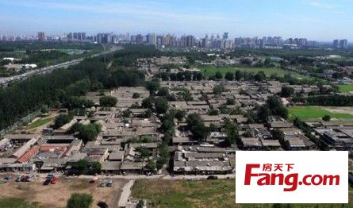
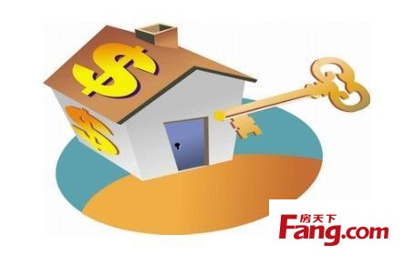

1、谢国忠：2014房价将跌50%，下跌的时间是5-10年，这是大谎言。房价走了10年牛市，跌半年就到底，也许在火星上会发生，在地球上不会发生。参考日本房价下跌14年左右，跌70%，及香港从亚洲金融危机跌到非典疫情，6年下跌65%的实例。
2、土地有限房价必涨是谎言。中国的人口密度不如日本、香港地区、德国等地方。中国人口多，所以盖的大多是高楼，上海18层以上的高楼，超过美国东海岸的总数。

3、城市化房价必涨是谎言。农民的收入远不如城市人，城市人都买不起房子，居然还有人幻想农民进城维持高房价。
4、人民币升值房价必涨是谎言。人民币对美元是升值的，对加元、澳元、欧元是贬值的。日本房价泡沫从1990年后破灭，可日元对美元一直升值到1995年。美元对欧元前几年一直在贬值，可是在此期间，美国房价上涨近一倍。
5、城市的土地稀缺房价必涨是谎言。房价再涨1万倍也是稀缺的，但不要忘了：人民币是稀缺的。
6、中国的房子质量较差，但同样是房子的特性，这些质量问题可能要过20年甚至更久才暴露。这时房产商、建筑商可能已经关门大吉了。或者因为特别的事情才暴露，比如地震，再比如浙江有人装修，敲开墙，发现应该是两根钢筋的，居然被两根竹子取代。连王石都认为目前中国房子质量不够好，更不用说一些二三流开发商的房子的质量了。
7、不要因为存款负利率就买房。中国的经济萧条不是不可能的，这种情况下，现金最值钱，因为经济走弱，什么东西价格都要跌。看看日本，经济萧条，于是房价、股价、物价全部下跌，现金相对就升值了。
8、中国的房地产业就是一个地方政府掠夺普遍居民财富的一个行业，开发商只不过是依附于地方政府，或是地方政府权贵的代言人罢了。所有与掠夺相悖的东西，如经济适用房、廉租房、集资建房，都是地方政府的眼中钉，房产经济是掠夺经济。
9、开发商、地方政府、经济学家是利益共同体，是买房人的敌人，所以这三个主体永远不会说房价有泡沫，房价会下跌。所以楼市中的言论，先要看看它代表谁的利益。参考毛泽东的话:敌人赞成的，我们就要反对；敌人反对的，我们就要赞成。作为开发商，李嘉诚和王石是例外。
10、房价上涨的时候未必会死人，房价下跌时却一定会死人。这是李嘉诚的话。股市在十年内，有两次下跌超过60%，自杀的人全国也没几个，可是楼市，会有很多。以后走路的时候，尽量不要在高楼下面走。
11、房价贵不贵。可以参考以下几个数据:一是美国目前房价中位数是20万美元，约200平方米的别墅，相当于美国中等家庭收入的4倍，而北京上海这样的烂地方，是16倍于家庭收入。平均房价7000元/平方米，中国是3600左右；中国人均存款是13000元左右。综合GDP、自然资源、科技水平、人员素质等因素，联合国测算，中国人均财富是美国的2%。
12、房价的持续下跌，一定会造成大量银行坏账、烂尾楼，建材、钢铁等行业将遭受重灾，但这是无法避免的。中央政府除了银行业，从来没有拿出真金白银挽救一个行业，更何况房地产业现在这个地步，都是地方政府的昏头官员造成的，自己拉的屎，自己擦。而地方政府，本质上就是要通过高价卖地来收钱的，怎么可能反过来出钱救这个行业？
13、中国一定会大量出现断供房
14、一定会有部分房产商卷款潜逃，留下一些对天哭的傻老百姓。地方政府有可能去擦这个屁股，有可能不擦。

15、房价从长期来看，一定是上涨的，但扣除通货膨胀，增值是非常少的。美国100年来，扣除CPI，每年涨3%。最近30年同样如此。英国从1965年到2004年，房价从不到4000英镑涨到14万英镑，但不要急，同期CPI上涨12倍，就是说相当于房价每年涨2.9%。其中上涨集中在19958年之后，因为1995年只比1965年涨了40%，算是CPI，房子是不断贬值的。

16、房价长期上涨，不代表永远上涨。短期上涨速度超过长期上涨速度，必然有下跌。日本在33年内，地价上涨100倍，随后14年下跌70%，2005年前后有所上涨，但好象日本房价最近又跌了。希望在中国房价5年之后下跌比如60%时，打算自杀的人，有人发个短信给他:房价长期来看是上涨的。